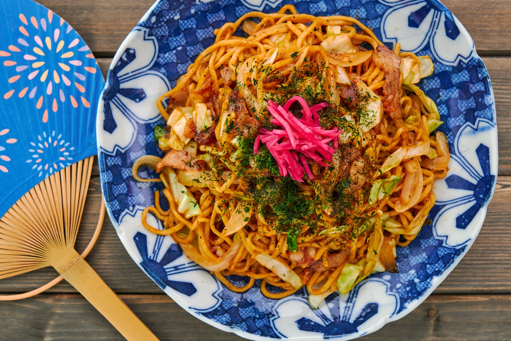

Yakisoba

Yakisoba (焼きそば) is one of the best known street foods in Japan, and the name literally means “grilled noodles.”
It's thought to have originated from Chinese cuisine and became a popular fast-food meal in the black markets that popped up around Japan after the war.
In an era when food was in short supply, and the country was busy rebuilding, the basic ingredients needed to make yakisoba, and the possibility of preparing
it on large steel griddles called a teppan (鉄板), made it ideally suited for these makeshift outdoor markets.
Ingredients
For Yakisoba Sauce
- 2 tablespoons ketchup
- 1 tablespoon oyster sauce
- 1 tablespoon Worcestershire sauce
- 1 tablespoon soy sauce
For Yakisoba Noodles
- 260 grams fresh ramen noodles
- 1 tablespoon vegetable oil
For Stir-fry
- 1 tablespoon vegetable oil
- 100 grams pork belly (sliced and cut into strips)
- 100 grams cabbage (chopped into strips)
- 80 grams onions (sliced)
- ¼ teaspoon salt
- ¼ teaspoon black pepper
To Serve
- aonori (green nori flakes)
- benishoga (red pickled ginger)
Steps
- To make the yakisoba sauce, stir together 2 tablespoons ketchup, 1 tablespoon oyster sauce, 1 tablespoon Worcestershire sauce, and 1 tablespoon soy sauce until evenly mixed.
- Boil 260 grams fresh ramen noodles for 1 minute less than whats stated on the package directions.
- Drain and rinse repeatedly with cold water while agitating with your hand to remove excess starch. When the water runs clear and the noodles are cold, drain well and shake off excess water.
- Toss the noodles with 1 tablespoon vegetable oil to coat evenly.
- Heat a large, heavy-bottomed frying pan over high heat. Add 1 tablespoon vegetable oil and 100 grams pork belly and stir-fry until the pork starts to brown around the edges.
- Add 100 grams cabbage and 80 grams onions and then season with ¼ teaspoon salt and ¼ teaspoon black pepper. Stir-fry until the vegetables are cooked but still vibrant in color.
- Add the parboiled noodles to the pan and stir-fry to reheat them.
- Pour the yakisoba sauce over the noodles and toss to distribute evenly.
- Stop tossing the yakisoba noodles for 20 seconds at a time to allow the sauce to caramelize.
- Serve the yakisoba sprinkled with aonori with a mound of benishoga on top.